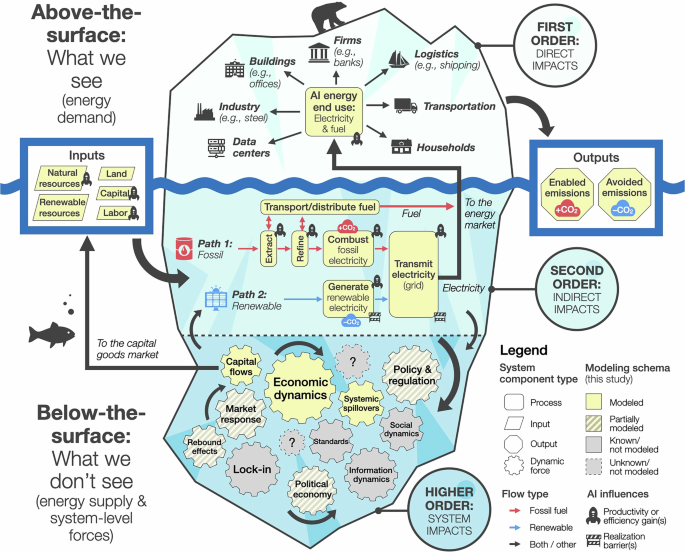

THE FRONT PAGE
EDITOR'S NOTE: A busy day in the latent space. #Judgment and craft
BREAKING VECTORS

Efficiency gains from AI integration drive net rise in global emissions
Macroeconomic modeling reveals that broad efficiency wins from AI ultimately spur economic expansion fast enough to outpace hardware energy savings, producing a net increase in carbon output. The underlying trade-off is stark: micro-level optimization offers the illusion of resource discipline while macro-level demand amplification steadily compounds the environmental footprint.
LAB OUTPUTS
CLI agent enforces strict budget ledgers and quote verification for terminal research
Mole addresses the run-away cost and hallucinated citation problem in autonomous research by using non-negative database constraints to hard-cap API spending and dropping claims lacking verbatim source matches. While its local SQL boundaries keep raw data on-device, enforcing strict determinism over LLM outputs risks discarding nuanced, non-verbatim context during synthesis.
HashAgent package delivers browser-based AI execution via URL links
By pairing WebGPU with URL-based distribution, HashAgent moves agentic workflows directly onto local hardware without server deployment. Eliminating cloud infrastructure removes API billing overhead, though real-world performance remains tightly bound to the user's local GPU memory limits.
INFERENCE CORNER
Google Pushes Homomorphic Encryption Beyond Theory into Inference
By running model inference on fully encrypted data, Google chip-scales a zero-trust privacy boundary, though the compute overhead remains a brutal tax on real-time systems.
CAKE Pairs Agentic Loops with Compiler Logic to Write Custom GPU Kernels
By feeding compiler feedback directly into an agentic loop, CAKE automates low-level CUDA optimizations that usually demand months of tedious human profiling. The process trades predictable human-readable codebases for raw speed, leaving engineers to debug black-box routines they no longer fully design.